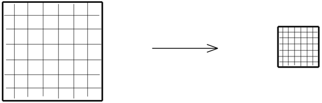

Zarr is a Python library for the storage of large, chunked, compressed arrays, designed for high-performance storage of data arrays, commonly used in scientific computing.
Zarr supports both array-based data storage and flexible data structures, enabling seamless integration with high-performance computing systems.
You can install Zarr via pip:
pip install zarrby conda:
conda install --channel conda-forge zarrEnsure you have the required dependencies installed for full functionality, such as h5py for
HDF5 support or numcodecs for compression algorithms.
Arrays are container of items of the same data-type & size (in bits). The number of dimensions and items in container are described by the shape.
But what if the array size is too large to fit into memory? Here comes Zarr!
It divides the whole array into chunks (chunking):
Then compresses each chunk (over 20 supported compressors e.g: BLOSC, Zstd, Zlib etc):
Retrieve chunks only when needed:
This visualization provides a clear understanding of how the array is stored in memory. Each chunk is stored as an entry in a dictionary, where keys follow a structured format like 0.0, 0.1, etc. The corresponding values are stored in binary format, optimizing storage and retrieval efficiency.:
Chunking allows you to split large arrays into smaller, more manageable pieces. This is especially useful when working with datasets that don't fit into memory.
import zarr
# Create a Zarr array with chunking
z = zarr.open('data.zarr', mode='w', shape=(1000, 1000), chunks=(100, 100), dtype='float32')
z[:] = np.random.rand(1000, 1000) #adding some data
Here, the array is split into chunks of size 100x100. You can control the chunk size depending on your hardware capabilities and the nature of your data.
Now we can retrieve a setion of data using slicing. Retriving the data will load all those chuncks which contains the desired set of data.
z = zarr.open('data.zarr', mode='r')
# Load only a portion of the data
subset = z[200:300, 400:500]
For seeking into zarr and see how efficient it is we can load data by different method and can check loading time for different methods.
The below code generate a 2D array of shape 5000x5000 and store it in csv, numpy and zarr.
import numpy as np
import pandas as pd
import zarr
data = np.random.rand(5000, 5000)
# File paths
csv_file = "large_data.csv"
npy_file = "large_data.npy"
zarr_file="large_data.zarr"
# Save data in different formats
pd.DataFrame(data).to_csv(csv_file, index=False, header=False) # CSV format
np.save(npy_file, data) # NumPy format
zarr_f = zarr.create(shape=(5000, 5000), chunks=(100, 100), dtype='float64', store="large_data.zarr")
zarr_f[:] = data
print("Files saved successfully.")
Once all the files are saved successfully. We will retrive 100 rows from each format and check the retrival time. For this we will be using builtin time library of python.
import numpy as np
import pandas as pd
import zarr
import time
csv_file = "large_data.csv"
npy_file = "large_data.npy"
zarr_file="large_data.zarr"
def measure_time(load_func, desc):
start_time = time.time()
subset = load_func() # Load 100 rows
end_time = time.time()
print(f"{desc} retrieval time: {end_time - start_time:.4f} seconds")
# Measure retrieval times
print("\nRetrieving 100 rows from each format:")
measure_time(lambda: pd.read_csv(csv_file, header=None).values[:100, :], "CSV")
measure_time(lambda: np.load(npy_file)[:100, :], "NumPy")
measure_time(lambda: zarr.open(zarr_file, mode='r')[:100, :], "Zarr")
In my computer the output is like this
Retrieving 100 rows from each format:
CSV retrieval time: 8.6712 seconds
NumPy retrieval time: 0.1489 seconds
Zarr retrieval time: 0.1179 seconds
We can clearly see that Zarr takes the least time for retriving data. In this example we have taken a data of size 5000x5000. In practical use the data set much much larger. In that case zarr makes a big difference.
Zarr supports various compression methods to reduce storage size, including blosc,
gzip, and others.
import zarr
# Create a compressed Zarr array
arr = zarr.zeros((10000, 10000), chunks=(1000, 1000), dtype='f4', compressor=zarr.Blosc(cname='zstd', clevel=3))
This example creates a compressed array using zstd compression with a compression level of
3.
Zarr can take advantage of parallel processing for efficient data reading and writing. It supports multi-threading and parallelized computations on chunks.
import zarr
import dask.array as da
# Create a Dask array backed by a Zarr store
zarr_store = zarr.open('data.zarr', mode='w', shape=(10000, 10000), dtype='f4', chunks=(1000, 1000))
dask_array = da.from_array(zarr_store, chunks=(1000, 1000))
# Perform a parallel operation
result = dask_array.sum().compute()
Using Dask, you can perform parallel operations on a Zarr-backed array, leveraging multi-core CPUs or distributed systems for large-scale computation.
Zarr supports different storage backends, including local file systems, cloud storage, and databases. You can choose the backend that best suits your needs.
import zarr
# Store Zarr array in a cloud-based store (e.g., Amazon S3)
store = zarr.storage.Store('s3://bucket-name/data.zarr')
arr = zarr.open(store, mode='w', shape=(10000, 10000), dtype='f4', chunks=(1000, 1000))
This example shows how to use Zarr with Amazon S3 as a storage backend, but you can easily switch to other cloud providers or local file systems.
Creating Zarr arrays is simple and efficient. You can create arrays from scratch, load them from existing data, or use other libraries like Dask to work with large datasets.
import zarr
# Create a new Zarr array
arr = zarr.create(shape=(1000, 1000), dtype='f4', chunks=(100, 100)) #This will create a 1000x1000 array with 100x100 chunks, suitable for efficient access and modification.
arr2 = zarr.array([1, 2, 3, 4, 5]) #Creating an Array from a List
arr3 = zarr.empty((5, 5), dtype='f4') #Creates an empty Zarr array of shape (5,5) with float32 data type
arr4 = zarr.zeros((4, 4), dtype='i4') #Creating a Zero-Filled Array
arr5 = zarr.ones((3, 3), dtype='f8') #Creating an Array with Ones
arr6 = zarr.full((2, 2), fill_value=7, dtype='i4') #Creating a Persistent Zarr Array on Disk
arr7 = zarr.open('resizable.zarr', mode='w', shape=(2, 2), dtype='i4')
z.resize((4, 2)) #Creating a Resizable Array that could expand later
Zarr provides an easy-to-use API for reading and writing arrays to disk, including support for compression and chunking.
import zarr
# Open a Zarr array for writing
arr = zarr.open('data.zarr', mode='w', shape=(1000, 1000), dtype='f4', chunks=(100, 100))
# Write data to the array
arr[:] = 42
Here, data is written to all elements of the array with the value 42.
Zarr supports parallel reading and writing of chunked arrays, which is especially beneficial when working with large datasets.
import zarr
import dask.array as da
# Create a Zarr-backed Dask array
arr = zarr.open('data.zarr', mode='r', shape=(10000, 10000), dtype='f4', chunks=(1000, 1000))
dask_arr = da.from_array(arr, chunks=(1000, 1000))
# Perform a parallel operation
result = dask_arr.mean().compute()
This example demonstrates performing parallel operations on a Zarr array using Dask, which efficiently computes the mean of the array.
Zarr-Python 3 establishes itself as the premier solution for modern data challenges, offering:
Zarr-Python 3's advancements enable breakthrough implementations in 6 critical domains: